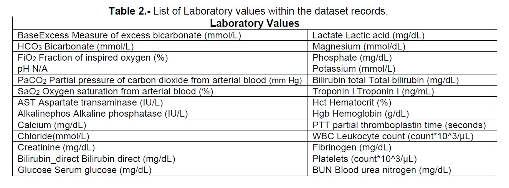

November 01, 2022
Evaluating a Predictive Analytics Case
Being able to detect sepsis in the early stages, “blood poisoning”, by developing machine learning and artificial intelligence prediction models (Anjali, 2021).
The study used a total of 40,336 patients’ Electronic Health Records to build the models. The dataset records included values like age, gender, hospital admission time, vital signs, laboratory values, and ICU length of stay (Anjali, 2021).
The original dataset contained several values that are shown in Tables 1 & 2. The article mentions that missing values were filled with corresponding mean values from the dataset. The dataset was obtained by Kfold Cross-validation and SMOTE sampling (Anjali, 2021).

The dataset was used to determine which algorithm’s classifier was the most feasible. The predictive classes of the confusion matrix, True Positive, False Positive, False Negative, and True Negative, were used to calculate the following parameters following
defined formulas: Accuracy, Precision, Recall (Sensitivity), and F1-Score. In addition, a test set of the confusion matrix was provided for each of the respective models evaluated (Anjali, 2021).
The results obtained for the Multi-Layer Perceptron are provided below as an example:
Preformatted
For Multi-Layer Perceptron:
accuracy: 0.9519736164072967
recall score: 0.18036529680365296
precision score: 0.42473118279569894
f1 score: 0.2532051282051282
test-set confusion matrix:
[[9158 107]
[359 79]]
The study was able to use and create the following machine learning algorithms model to test the dataset used in this study:
x• Multilayer Perceptron
K-Nearest Neighbor
Gaussian Naïve Bayes
Extra Tree Classifier
Adaboost Classifier
Linear Discriminant Analysis
All the machine learning classifier algorithms models were compared by plotting all the individuals’ results between each of the classifier models. As a result, a total of four plots were created where the corresponding axis for each plot is described below:
The results provided that the Extra Tree Classifier (ETC) provided the best performance among all six classifiers. The ETC Classifier will be able to provide the best sepsis prediction if compared to the other models. The study also mentions that the Multilayer perceptron and Adaboost classifiers will provide the best prediction for large datasets. The use of Machine Learning and Artificial Intelligence algorithms to help recognize sepsis will provide hospitals and individuals with mechanisms to save lives and cut down financial expenses.
References
Anjali Kshirsagar Shubham More , Saurabh Kale , Rutuj Anturkar, Sushma Vispute, 2021, An Application of Predictive Analytics for Early Detection of Sepsis: An Overview, INTERNATIONAL JOURNAL OF ENGINEERING RESEARCH & TECHNOLOGY (IJERT) Volume 10, Issue 01 (January 2021),